All tools
Every tool, in plain words
Photo Clinic is a set of small tools in seven tabs. You do not need all of them. Here is each one: what it is for, what it does, whether it can change your files, and how to use it. Not sure where to begin? Open Start here on the Home tab.
Download for MacA preview explains every choice
After you press Preview, every option shows what it did to your files, right under it, so you see exactly what each switch does and how many files it touches.
- A count and an example. “4 folders: 16 files go into 2017/2017-07 Summer in Lisbon …”, or “1 folder: Japan 2025 (1) → Japan 2025”.
- Options you left off say what they would do. “Would affect 2 folders: Takeout wrapper folders”, with a button to turn it on and preview again.
- Show them. One click filters the list of every file to just the files that option touched.
- Slow questions are asked, not forced. Counting exact copies in different folders means reading every file, so it waits for you to press Count it.
- Warnings that name the consequence. If 43 pictures have no date and the file date is today, it says they would be filed under today, and offers _undated instead.
- A before-and-after strip for the whole job: files kept, deleted, changed, how much is copied, what is renamed, and what Undo does.
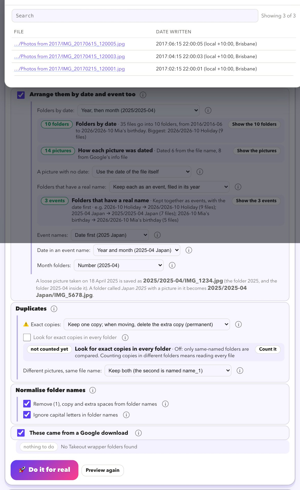
Jump to a tab
Home · Fix · Tidy · Move · Check · Rescue · Tools
Home
Pick a job, or let Photo Clinic look at what you have and suggest one.
Start here
For when you are not sure where to begin.
- What it does
- You choose what you have: a Google Takeout (zip files or folder), a folder of photos, a Photos library, or an old iPhoto or Aperture library. Photo Clinic works out which it is, looks inside, says what is wrong with it in plain words, and builds a plan with the steps in order. Each step has a button for the tool that does it.
- Use it when
- You have a pile of photos and no idea which tool to use, or you want one recommended path.
- Changes your files?
- No. It only reads. The plan only opens the other tools, and each of those starts with a preview.
- You get
- A short plan with the steps in order, and your progress is remembered if you come back.
How to use it
- Open Start here on Home.
- Press Choose… and pick a folder, a Takeout zip or a Photos library (or drop it on the box at the top).
- Press Look at it and read what was found.
- Press Make my plan and follow the steps.
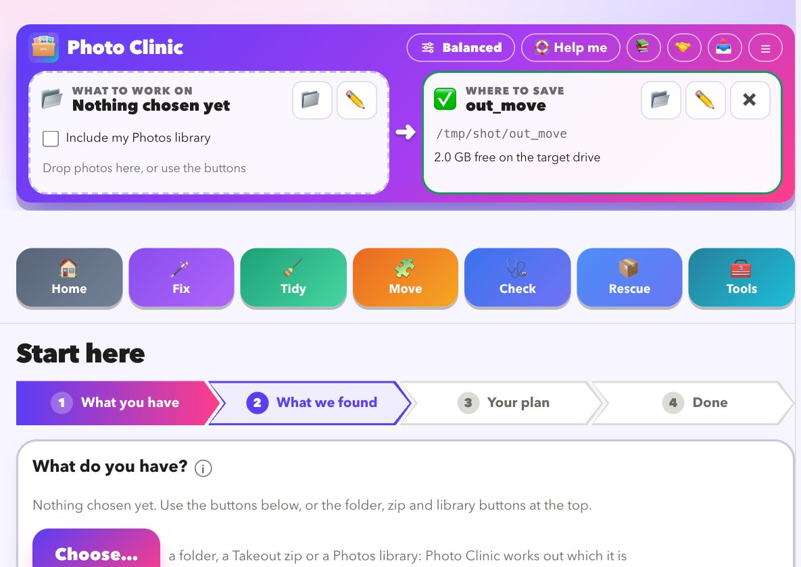
Fix
Put the real dates, places and captions back on photos that came out of Google Photos.
Fix my photos
For a Google Takeout. Google keeps the date, place and caption in a separate .json file and leaves the photo bare. This writes them back.
- What it does
- Matches every photo to its
.jsonfile (even across zips and numbered or cut-off names) and writes the real date, location, caption, people and favourites into the photo. It writes dates in local time with the right offset, pairs Live Photos with their video, keeps album names, skips exact copies, handles Google's edited copies, and rebuilds missing dates from file names and folder names, labelled as guesses. Five styles from Safest to I like risk set every option for you. - Use it when
- Your photos show the day you downloaded them, or are missing places and captions.
- Changes your files?
- By default it makes fixed copies in Where to save and leaves your Takeout alone. Only the Fix in place quick job writes into your own files, and it says so in capitals.
- You get
- A result card with a before-and-after storyboard of a few of your real photos (what the date, place and caption change from and to), the counts, and a list of every file. A preview shows the same, with nothing changed.
How to use it
- Add your Takeout zip files or folders under What to work on, and choose Where to save.
- Choose a style with the button at the top (Balanced is the default). Not sure what to tick? Press Help me choose and read its advice.
- Press Preview and look at the storyboard and the list.
- Press Do it for real. Keep your Takeout until you have checked the result.
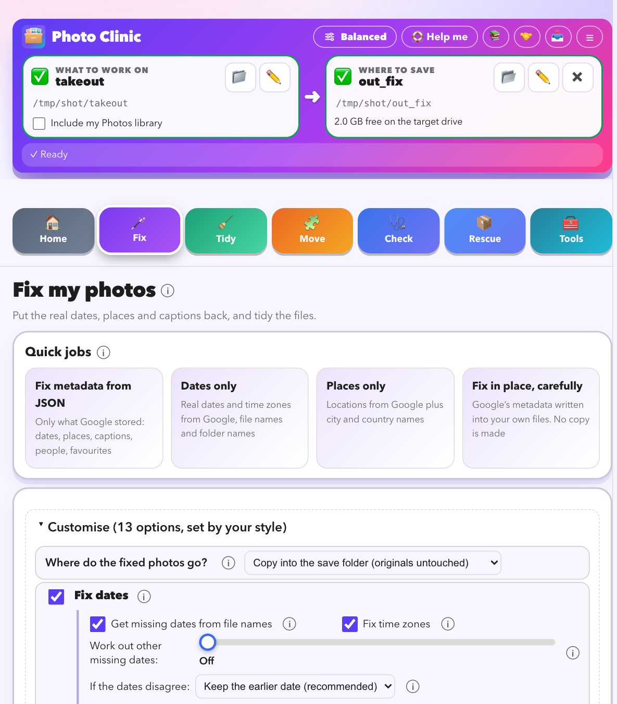
Quick jobs
Four one-click versions of Fix, for when you only want one thing.
- What they do
- Fix metadata from JSON writes only what Google stored. Dates only fixes dates and time zones from Google, file names and folder names. Places only fixes locations and adds city and country names. Fix in place writes into your own files with no copy.
- Changes your files?
- The first three make copies. Fix in place changes the originals, so back up first and preview first.
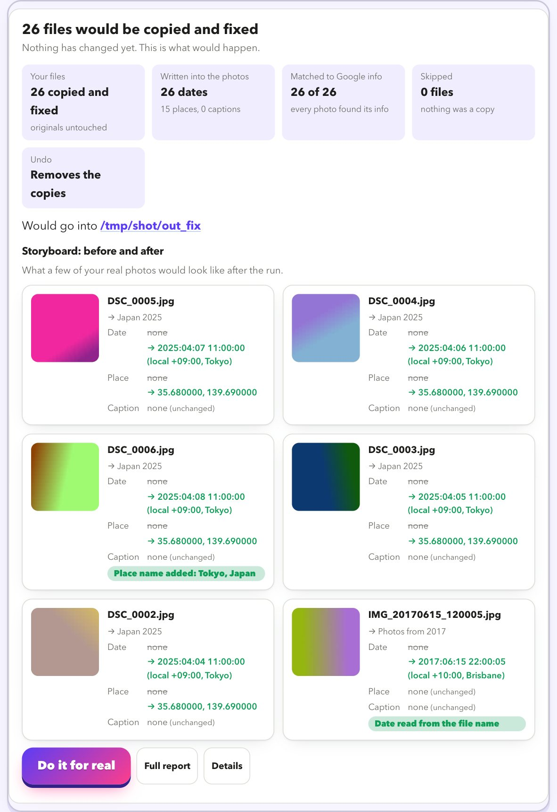
Tidy
Clear leftovers, make old videos play, and find the same picture saved twice.
Tidy up leftovers
For the clutter a copy or a Takeout leaves behind.
- What it does
- Five steps, always in the safe order: 1 give files with no extension a proper one; 2 delete Google's extra
.jsonfiles (off until you tick it); 3 delete junk and cache files (system leftovers, Picasa.ini, iPod thumbnail caches, temporary files, empty files); 4 tidy names (remove (1) and copy, extra spaces, and put a folder with a date in its name under that year); 5 delete empty folders, so the last step catches the ones the others leave. - Use it when
- You have finished fixing or merging and want the folders clean.
- Changes your files?
- Yes. It deletes, renames and merges. That is why it starts as a preview, lists every change, and says that removed and renamed items cannot be put back from Photo Clinic.
- You get
- A card with one fact per step and a list of every change, which you can filter by step.
How to use it
- Choose the folder under What to work on.
- Tick the steps you want (the defaults are cautious).
- Press Preview and read the list of changes.
- Press Do it for real.
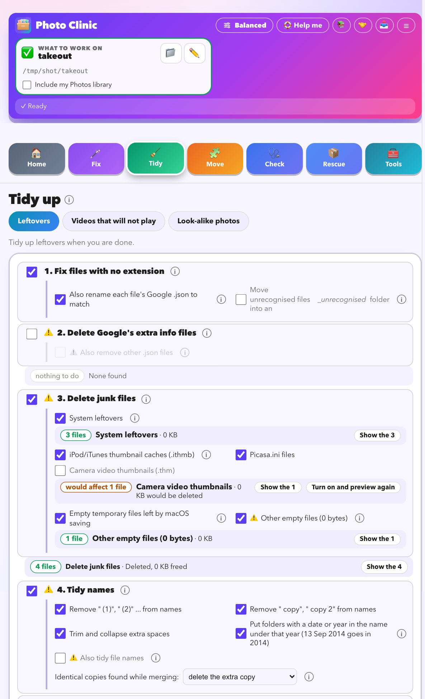
Smart folder consolidation
Finds folders that are really the same folder with slightly different names and merges them.
- What it does
- Spots groups such as Japan 2025, delete-Japan 2025 and Japan 2025-old, shows each group, and merges the ones you tick into one folder. Identical files are kept once; different files with the same name are both kept.
- Changes your files?
- Yes, it moves files. It starts as a preview. Merged folders are gone from their old places and this cannot be undone from Photo Clinic.
Videos that will not play
Turns old video formats into MP4 that plays everywhere, including in Apple Photos.
- What it does
- Converts
.avi,.mpg,.mpeg,.wmv,.3gp,.flv,.mkv,.mts,.m2tsand.vob(and.movif you tick it). It re-wraps without re-encoding when it can, so nothing is lost, and re-encodes only when it must. Each result is checked before the old file is touched. Live Photo videos are left alone unless you say otherwise. A preview estimates the size afterwards by test-encoding a few samples. - Changes your files?
- It makes new MP4s. What to do with the old video is your choice: move it to an
_original_videosfolder (the default), keep it, or delete it (the card tells you which, and that deleting cannot be undone). - You get
- A card with how many were converted, how, the space saved, and a list of every video and what happened.
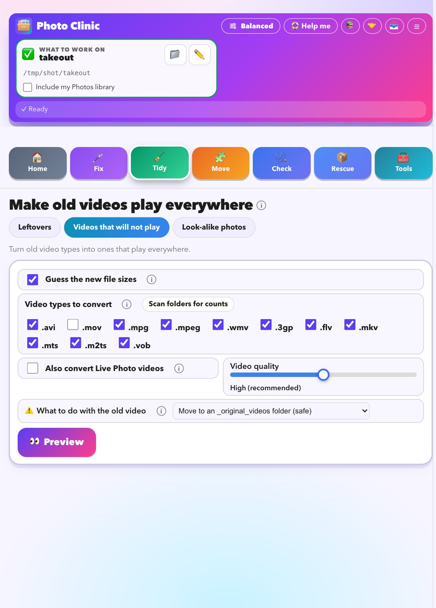
Find look-alike photos
The same picture saved twice, or at another size, or lightly edited.
- What it does
- Compares how pictures look, not what they are called, and shows each group side by side with a suggested keeper. The keeper is chosen by rules you control: a favourite wins, an edited version wins, more pixels, a bigger file, more information inside, in an album, a real photo over a screenshot, and bursts are kept by default. You can tick or untick any photo.
- Changes your files?
- Only when you press Set aside the ticked photos. They are moved, not deleted, into a
_similar_set_asidefolder with their folder structure. Undo in Past runs moves them back. - You get
- A card with groups, extra copies and the space you could free, and the list to review.

Move
Combine folders, sort them into neat folders, copy an old library out, or send photos to Apple Photos.
Combine and arrange folders
For a folder full of folders.
- What it does
- Combines: folders with the same name merge at any depth; identical files are kept once; two different files with the same name are both kept (or one wins, as you choose). Arranges (tick Arrange them by date and event too): files are filed by the date each picture was taken. The default is a folder per year with a folder per month inside it (
2025/2025-04); year only, year, month and day, or one folder per month are one click away. A folder with a real name, like Japan 2025, stays together as an event, with the date first (2025-04 Japan) and filed in its year. Japan 2025 and 2025 Japan become one folder. - Changes your files?
- By default it copies into Where to save. Tick Move instead of copy to empty the source folders instead. Undo this run in Past runs removes copies or moves files back (extra identical copies that you chose to delete cannot come back).
- You get
- A before-and-after strip, a count and example under every option (including the ones you left off), and a list of every file: where it came from, where it goes, and why (for example, dated from the picture or from its folder). Click a path to see it in Finder. See how to sort photos into folders by date.
How to use it
- Add the folders under What to work on and a new folder under Where to save.
- Open Move, choose A folder, and tick Arrange them by date and event too if you want it.
- Press Preview and look through the list.
- Press Do it for real.

Old libraries (iPhoto, Aperture, old Photos)
Add the old library and Move does the rest.
- What it does
- Move recognises an old library and says so. It reads the library's own database, so albums, keywords, people, ratings, titles, places and edited versions come with the pictures, and it copies them into clean folders: by album, year, year then month, year, month and day, one folder per month, or keeping the library's own folders. It skips exact and probable copies, and can skip pictures you already have in your current library. Copy gently goes slowly with a rest after every file, for a struggling drive.
- Changes your files?
- The old library is only ever read. The copies are made in Where to save, and Undo removes exactly what the run made. After a good copy you can choose Clear the copied originals, to the Trash or deleted for good (you type DELETE), for the files whose copy is verified.
- You get
- A card with what was found (pictures, edits, videos, albums, keywords, people), what would be copied into how many folders, and a list of every file. See Old libraries.
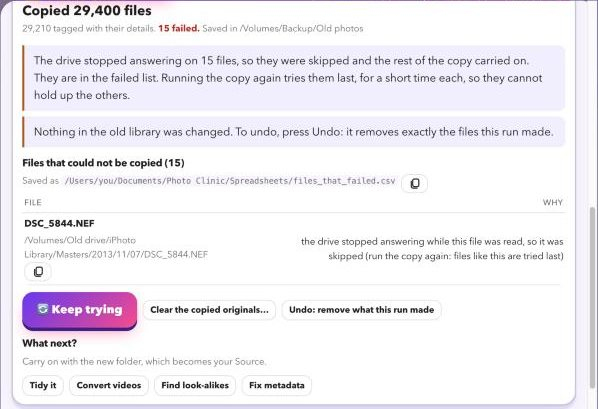
Send to Apple Photos
Sends a finished library into the Photos app in careful batches.
- What it does
- Sends oldest first in batches of about 2 to 50 GB so the timeline fills in order, keeps a Live Photo's picture and video together, turns album folders into Photos albums, and waits between batches for iCloud to keep up (until each batch has uploaded, until there is room, until you press Continue, or not at all). Files Photos cannot import are listed and left out.
- Changes your files?
- It does not change your files. It adds to your Photos library, and Photos has no undo for imports, so start with Preview, then Send a small test (20 photos) and look at it in Photos.
- You get
- A card with how many were sent, in how many batches, how many were already there, and any that cannot be imported. See Apple Photos.
How to use it
- Choose your finished library under What to work on.
- Open Move and choose Apple Photos.
- Press Preview to see the batches.
- Press Send a small test, check it in Photos, then Do it for real.
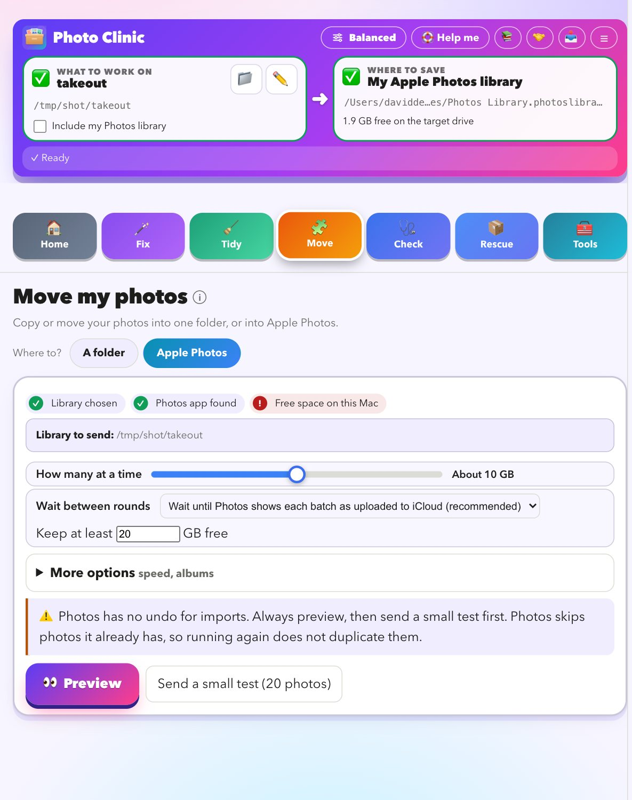
Check
Is my library healthy? Is it really in iCloud? What is it doing?
Check my photos
One check for your folders, and your Photos library too if you tick Include my Photos library.
- What it does
- Gives a health score out of 100 and a plain list of what is wrong, each with a button to the tool that fixes it: wasted space and duplicates, messy folders, empty or wrongly named files, old-format videos, files only in iCloud Drive, photos with no date or the wrong date, and more. With your Photos library included it also checks upload progress, the system logs and your Mac's free space and battery. Look harder reads far more files. Check again later by itself repeats it while the app is open.
- Changes your files?
- No. It only reads. Fixing what it finds is done in the other tools, each with its own preview.
- You get
- A verdict, a score history so you can see whether the library is getting tidier, and findings you can act on.
How to use it
- Choose your folders (and tick Include my Photos library if you want it checked).
- Press Check my photos.
- Read the verdict and press the button on any finding.
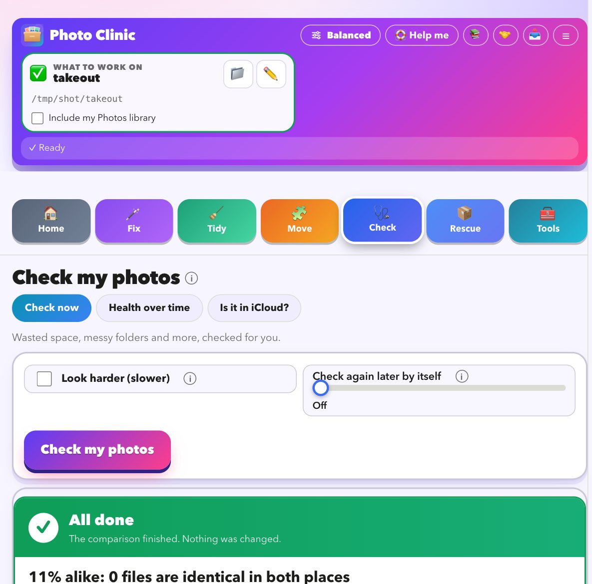
Health over time
A reading every 15 minutes, so you can see whether Photos is syncing, stuck or erroring.
- What it does
- Takes a reading of your Photos library (its database, the system log and the sync engine) every 15 minutes while Photo Clinic is open, or when it is closed if you switch that on, and draws the trend. It tells syncing, stuck and erroring apart, which is hard to see from the outside on a big iCloud library.
- Changes your files?
- No. It only reads. It reads a copy of the database.
- You get
- A state in plain words, a trend chart, and a note if the readings stop.
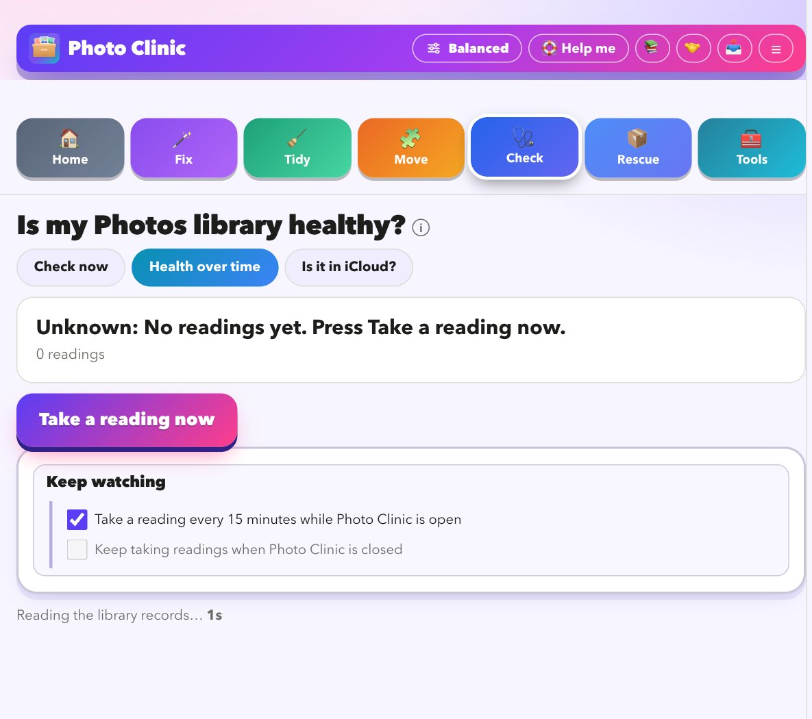
Is it in iCloud?
Counts what has uploaded, how fast, and whether it looks stuck.
- What it does
- Reads a copy of your Photos library's database to count what has reached iCloud, the speed, and the time left. It can also check that the photos in a folder you chose have arrived in Photos, by file name and size. Make a migration receipt saves a record of what arrived. Apple does not document this database, so treat the numbers as a strong hint and confirm in Photos and on iCloud.com.
- Changes your files?
- No. It only reads. Keep it syncing while I am away opens the Keep sync running tool.
- You get
- A plain answer, a progress figure and a receipt you can keep.
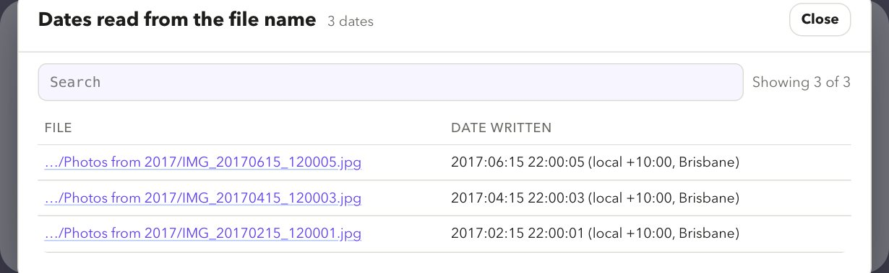
Rescue
Photos that are hard to get at: an old library, or a failing drive.
Rescue an old library
Opens Move with your old library chosen (see Move above).
- Good to know
- If a drive keeps stalling, files it will not answer on for 90 seconds are skipped and listed, the copy carries on with the rest, and they are tried last next time. Keep trying goes back to just those files. If your Mac has crashed during a long copy, tick Copy gently. The old library is never changed.
- Changes your files?
- Not the library. The copies go to Where to save and can be undone.
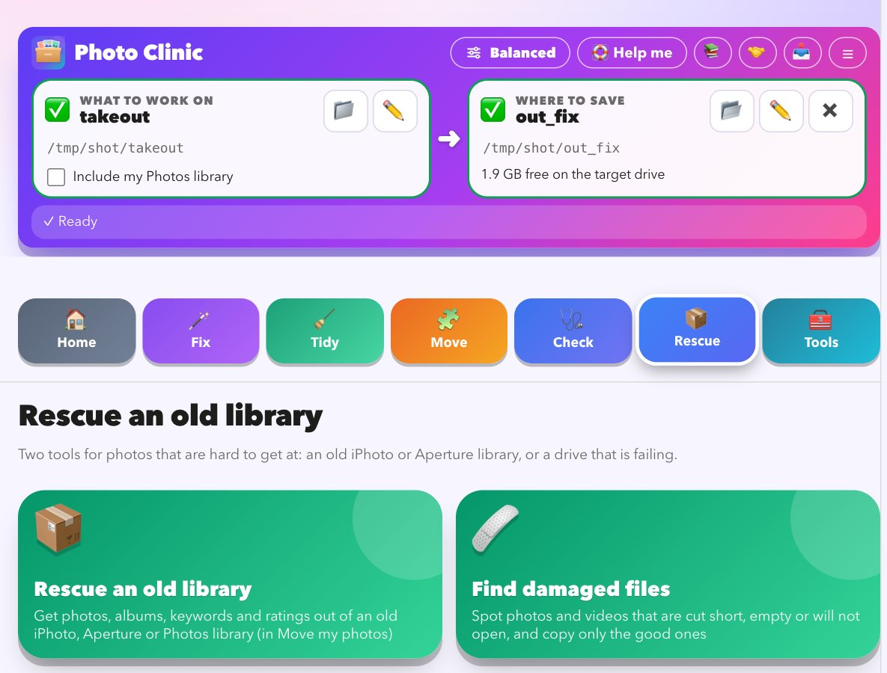
Find damaged files
Finds pictures and videos that will not open.
- What it does
- Checks every photo and video you chose and lists the ones that are cut short, empty, filled with zeros or will not open, and any that make the drive stop answering (if the drive stalls the scan stops and says so, instead of freezing). The quick check looks at the file; Check thoroughly reads each file to the end and tries to open it, which is much slower and finds damage in the middle. Copy the good files copies only the healthy ones, one at a time and gently, to a safe place.
- Changes your files?
- Finding is read-only. Copying makes copies. The option to remove each file from the original place once its copy is verified is off unless you tick it. You can also tag the damaged files in Finder, and remove the tag later.
- You get
- A list of damaged files with the reason, and a place to copy the good ones.
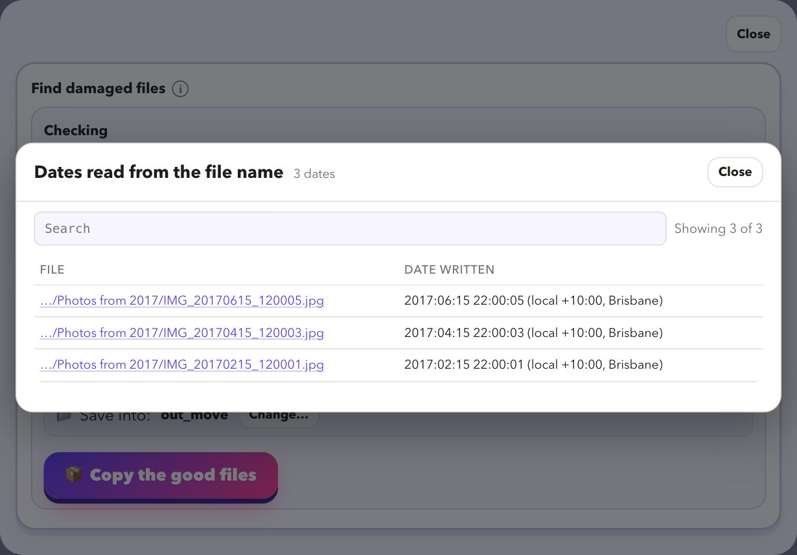
Tools
Small tools that each do one job. They open over the page, and most only read.
Compare two places
How alike are two folders or libraries?
- What it does
- Takes two places (folders, Photos libraries, old libraries or Takeout zips), for example a source and the copy you made, and shows what is identical, the same file filed in a different folder, files with the same name that differ, the same picture at a different size, and what only one side has. From there you can copy what only one place has into a folder, and clear the identical files from one side: tag them in Finder so you can review, set them aside in a folder, move them to the Trash, or delete them for good (you type DELETE).
- Changes your files?
- Comparing is read-only. Every file is compared byte for byte with its twin just before it is removed, and only removed if the twin is still there. The other side is never touched, and it will not clear an Apple Photos library (do that inside Photos).
- You get
- A card with the percentage alike and the counts, and a list of every file as a spreadsheet.
How to use it
- Add the two places under What to work on.
- Open Tools, then Compare two places, and press the button.
- Read the card. To clear the identical files, choose a side and how, then Remove….

Count my photos
How many photos and videos you have, how big, and where.
- What it does
- Counts photos and videos in the folders you chose (and your Photos library if you include it), with size, by file type and by folder.
- Changes your files?
- No. It only reads.
Disk space
Where is my disk space going?
- What it does
- For when Optimise Mac Storage is on but the library is not shrinking. Shows what takes the space and how much Photos could still free. It can take a minute or two on a big library.
- Changes your files?
- No. It only reads.

Look up a photo
Turns an id in a log message into the real photo.
- What it does
- Paste a long Photos id from a log (or part of one), or part of a file name. It shows the real file name, date and albums.
- Changes your files?
- No. It only reads.
Broken thumbnails
Finds the grey or black squares in Photos.
- What it does
- Finds photos whose small preview picture is missing, empty or the wrong size, and can copy the affected photos to a folder so you can re-import them.
- Changes your files?
- It only reads your Photos library and never changes it.
Sync meter
How fast Photos is talking to iCloud right now.
- What it does
- Reads the network use of the Photos and iCloud background processes and the library's own upload count, and shows how the queue is moving. It also has Is iCloud's queue moving? and a button to restart the iCloud Photos service if it is stuck.
- Changes your files?
- No. Restarting the service restarts a macOS helper, not your photos.
iCloud Drive busy files
Which file is iCloud Drive stuck on?
- What it does
- iCloud Drive errors in the log never say which file. This lists the files that changed in the last 30 minutes in iCloud Drive, Desktop and Documents (a file that keeps changing, such as a database, a browser profile or a project folder, is the usual cause) and any items still waiting to download. It looks only at names and dates, never inside files.
- Changes your files?
- No. It only reads.
Keep sync running
For when nobody is at the Mac, such as a holiday.
- What it does
- Every 10 minutes it checks whether iCloud is stuck (the sync backlog not shrinking for an hour while the engine keeps growing, or a service pinned at 90% CPU) and restarts only that service, gently, at most once every 2 hours. It leaves things alone while iCloud is throttling, and gives up and tells you after 3 restarts that did not help. Check before I leave tells you whether it is ready.
- Changes your files?
- No. It is off by default, and nothing leaves your Mac.
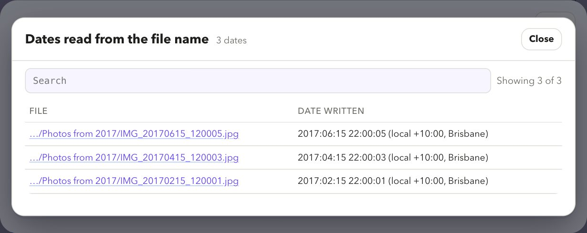
Apple system status
Is Apple having a problem?
- What it does
- Many iCloud and Photos errors in the log are on Apple's side, and nothing on your Mac will fix them. This asks Apple's public status page whether anything is not green. It sends nothing about you or your photos, and only runs when you press the button.
- Changes your files?
- No. It only reads.
Read the log
Photos and iCloud errors, in plain words.
- What it does
- Reads recent Photos, iCloud and Photo Clinic messages that you never see in Console and explains each in plain language with fixes, coloured expected, worth watching or needs attention. Look back from 1 hour to 7 days, switch between Plain words and Technical, paste log text from elsewhere, or have it check again by itself while the app is open.
- Changes your files?
- No. It only reads. Nothing is uploaded unless you switch on the optional sharing of unrecognised lines (see Privacy).
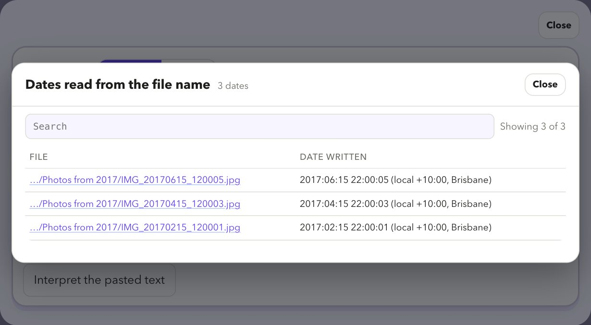
Live watch
The messages as they happen.
- What it does
- Streams the Photos and iCloud messages as they happen and explains each one in plain language. They appear in the side panel, so you can keep it open while you work and filter or group them.
- Changes your files?
- No. It only reads.
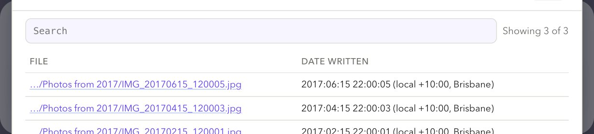
Fix guides and Known problems
Checklists and a reference list.
- Fix guides
- Pick what you are seeing. Each guide is an ordered checklist: some steps are buttons in Photo Clinic, some you do in Photos or Finder, some are a Terminal command you can copy. Your ticks are remembered on this Mac.
- Known problems
- A built-in reference list of known Photos, iCloud and macOS problems, each with a badge for how serious it would be. It is not a report about your library: to see what is wrong with yours, use Check my photos.
- Changes your files?
- No. It only reads.
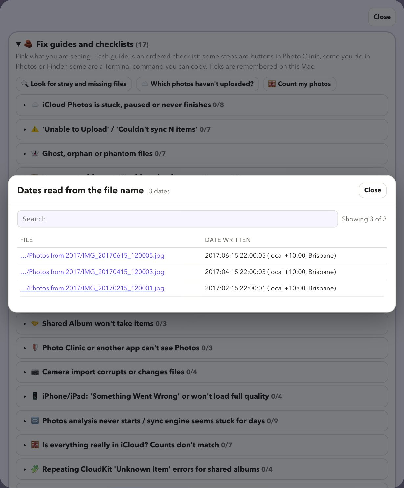
Look at your library for free
Download it, point it at your photos, and read the preview. That costs nothing and changes nothing.
Download for MacFree · Apple silicon Macs · signed and checked by Apple